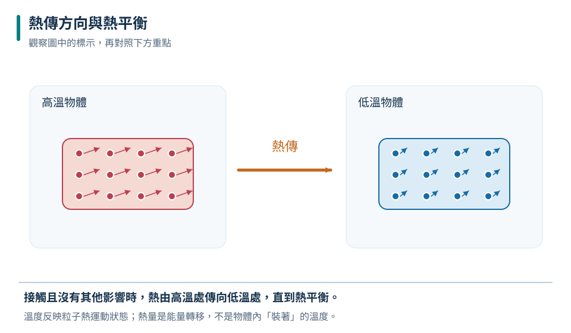
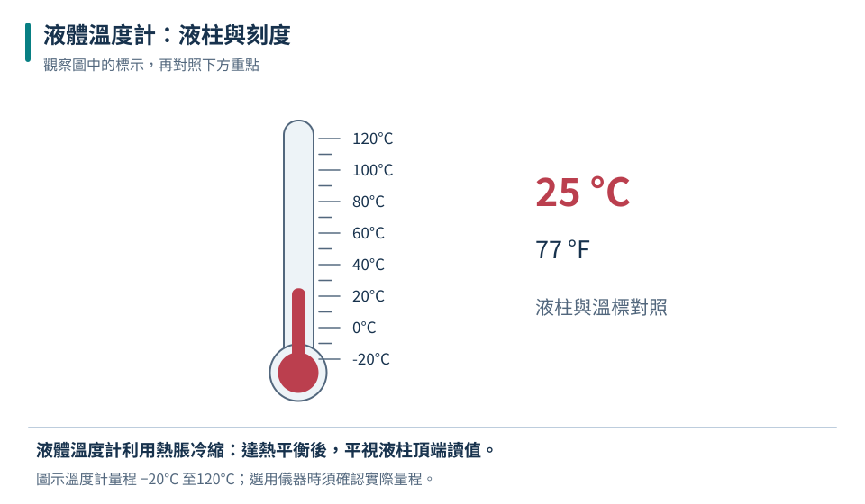
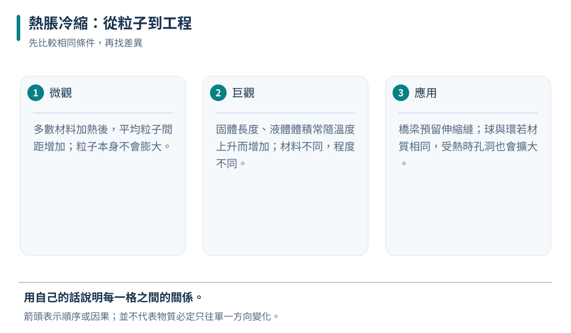
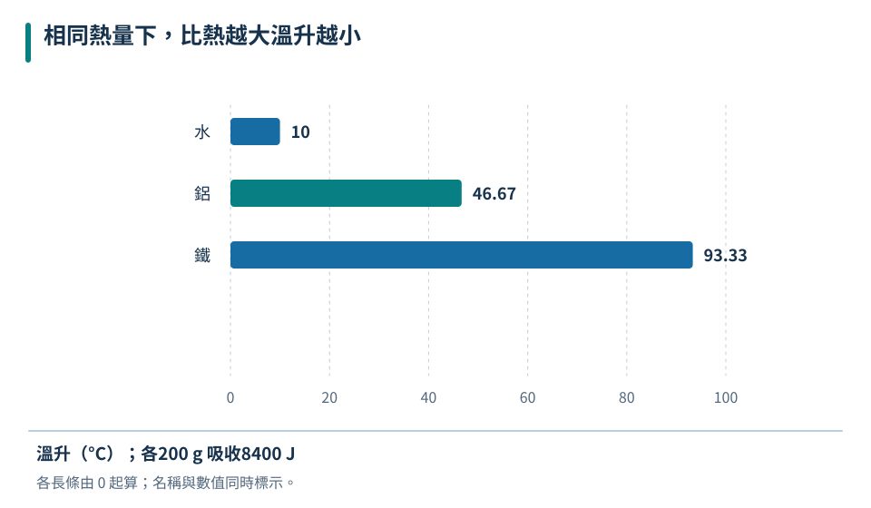
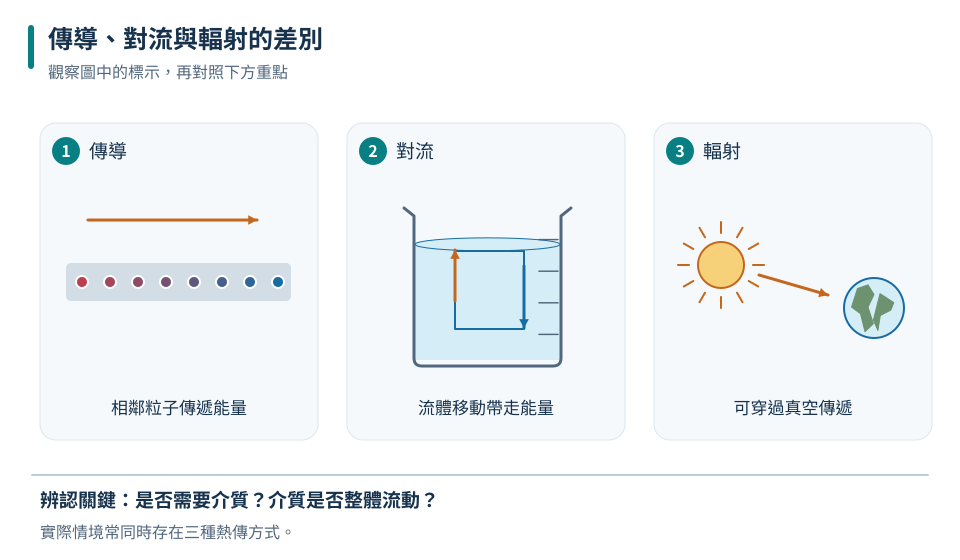
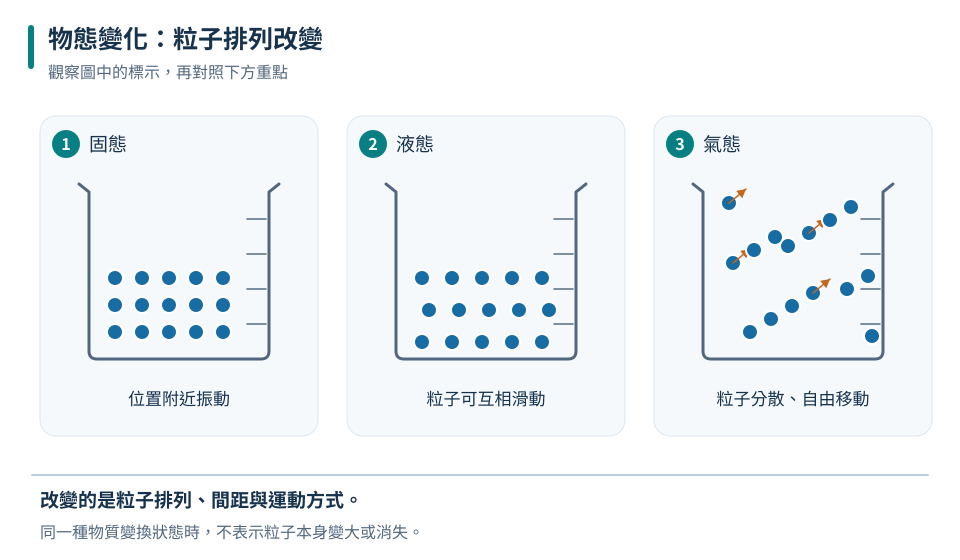
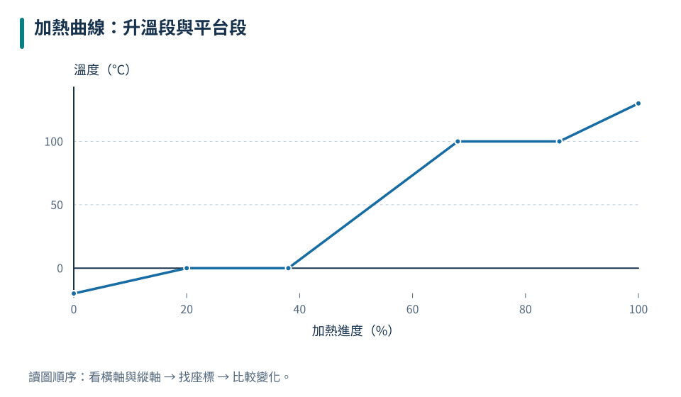

較低溫
粒子的平均運動較不劇烈。
八上理化共同核心
溫度描述冷熱，熱則是因溫差而傳遞的能量。本章用粒子觀、能量收支和圖表，把熱脹冷縮、比熱、熱傳播與物態變化連成一套可推理的觀念。
TEMPERATURE

先追蹤圖中的物體與箭頭，再用本節概念說明它們的關係。
溫度表示物體的冷熱程度，微觀上可理解為粒子運動劇烈程度的指標；它不等於物體「含有多少熱」。
粒子的平均運動較不劇烈。
粒子的平均運動較劇烈。
一小滴 90°C 熱水與一大桶 40°C 溫水相比，能量多寡還要看質量、物質種類和溫度變化。
THERMOMETER

先追蹤圖中的物體與箭頭，再用本節概念說明它們的關係。
液體溫度計利用液體熱脹冷縮。測量時球部要與待測物充分接觸，等待讀數穩定，並以視線平視液柱頂端。
互動溫度計
華氏溫標以水的凝固點 32°F、沸點 212°F 為參考；本章重點仍是溫度計原理與正確量測。
THERMAL EXPANSION

先追蹤圖中的物體與箭頭，再用本節概念說明它們的關係。
多數物質受熱膨脹、冷卻收縮。孔洞也跟著材料一起放大或縮小；不同物質膨脹程度不同，這正是雙金屬片能彎曲的原因。
金屬尺熱脹模擬
初始長度設定為 20°C 時 100.000 cm；圖中伸縮量為了看得清楚而放大。
保留長度變化空間，避免受熱擠壓變形。
兩金屬膨脹程度不同，受熱後彎曲，可控制電路。
蓋子與孔洞一起膨脹，內徑增大而較容易打開。
HEAT & SPECIFIC HEAT

先追蹤圖中的物體與箭頭，再用本節概念說明它們的關係。
比熱是使單位質量物質升高 1°C 所需的熱量。比熱越大，同質量吸收相同熱量時，升溫越少。
比熱升溫競賽
比較水、鋁、鐵的溫升。柱越高代表溫度變化越大，不代表含有更多熱。
相同質量吸收8400焦耳時，水溫升最少，鐵溫升最多。
混合熱平衡
只有同物質、質量相同且沒有熱散失時，才是算術平均；質量不同時要做質量加權。
HEAT TRANSFER

先追蹤圖中的物體與箭頭，再用本節概念說明它們的關係。
| 判斷線索 | 主要方式 | 例子 |
|---|---|---|
| 固體內部、直接接觸 | 傳導 | 金屬鍋柄逐漸變熱 |
| 液體或氣體整體循環 | 對流 | 冷氣裝在高處、熱水循環 |
| 隔空感到熱、可穿越真空 | 輻射 | 太陽照暖地面、火旁取暖 |
熱的傳導與輻射可以向各方向進行；只有流體對流時，受熱、密度較小的流體通常上升。
PHASE CHANGE

先追蹤圖中的物體與箭頭，再用本節概念說明它們的關係。
物態改變時，能量用來改變粒子間的排列與距離。純物質在定壓下熔化或沸騰時，持續吸熱但溫度暫時不變。
任何溫度都可在液體表面發生；提高溫度、增大表面積、加快空氣流動都可加速。
達沸點後，液體內部與表面同時汽化；沸點會受外界壓力影響。
物態變化時吸收或放出的能量，不直接用來改變溫度。
水蒸氣在皮膚上凝結成水，釋放汽化潛熱。
再降溫形成的熱水還會繼續降溫放熱，總傳遞能量較多。
HEATING CURVE

先追蹤圖中的物體與箭頭，再用本節概念說明它們的關係。
斜線段代表單一物態升溫；平台段代表兩種物態共存。平台仍持續吸熱，只是溫度暫時不升高。
互動加熱曲線
吸收的能量使液體粒子運動更劇烈，溫度上升。
| 曲線區段 | 物態 | 吸收能量的結果 |
|---|---|---|
| 固態斜線 | 固態 | 溫度上升 |
| 熔化平台 | 固＋液 | 改變物態，溫度維持熔點 |
| 液態斜線 | 液態 | 溫度上升 |
| 沸騰平台 | 液＋氣 | 改變物態，溫度維持沸點 |
| 氣態斜線 | 氣態 | 溫度上升 |
INTERACTIVE LAB
每題先辨認物質是否整體移動、是否需要介質，以及物態變化的方向，再作答。
挑戰一
找出情境中最主要的傳熱方式。
選一個答案開始挑戰。
挑戰二
判斷物態變化與環境間的能量方向。
選一個答案開始挑戰。
REVIEW
溫度反映粒子運動劇烈程度；溫度計要充分接觸、等待穩定並平視讀值。
熱由高溫流向低溫；無物態變化時 Q＝mcΔT，比熱大較不易升溫。
傳導靠粒子作用、對流靠流體整體移動、輻射不需介質。
熔化、汽化、昇華吸熱；凝固、凝結、凝華放熱。平台段溫度暫時不變。
CHAPTER TEST
先獨立作答，再查看解析。答題紀錄只保存在這台裝置的瀏覽器中。